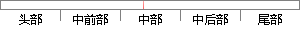

计算并得到最大短时能量、最小短时能量、最大短时平均过零率和最小短时平均过零率就是语音信号的波动范围，下面依据上述的四个范围分别为短时帧能量与短时平均过零率设置双门限（分为高门限与低门限），门限的数值将直接影响到最后端点检测判断的结果。
片段位置图

相似结果|
相似片段 1：混合双门限端点检测算法步骤：(1)计算信号平均过零率和短时能量，分别为短时能量和过零率估计确定两个门限，短时能量的一个高门限EH，一个低门限EL，过零率的一个高门限Zcr2，一个低门限Zcrl，并且根据经验值设置最大静音长度Maxsilence和最小噪声长度Minlen，语音当前状态status，静音状态silence，语音长度count标示，将语音的四个阶段静音，过度段，语音段，结束分别用
|
※ 片段修改建议 ※
近似词参考：- 计算：计较 较量争论 盘算
- 得到：获得
- 平均：均匀
- 平均：均匀
- 就是：便是
- 信号：旌旗灯号
- 波动：颠簸
- 范围：规模 局限 范畴
- 依据：根据
- 范围：规模 局限 范畴
- 平均：均匀
- 判断：判定 果断
- 结果：成果 成绩 成效 后果 了局 效果
系统自动生成语句： 计较并获得最大短时能量、最小短时能量、最大短时均匀过零率和最小短时均匀过零率便是语音旌旗灯号的颠簸规模，下面根据上述的四个规模分别为短时帧能量与短时均匀过零率设置双门限（分为高门限与低门限），门限的数值将直接影响到最后端点检测判定的成果。
注：本片段修改建议为系统自动生成，仅供参考。